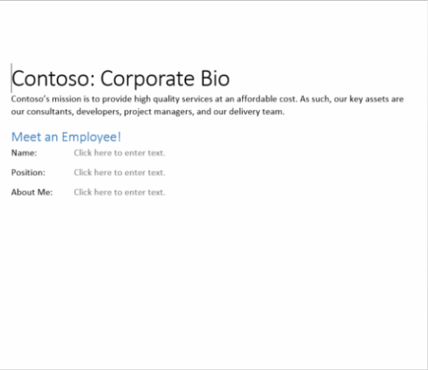
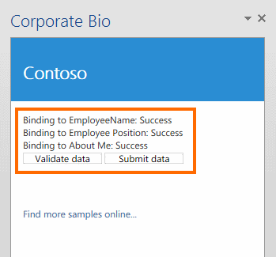
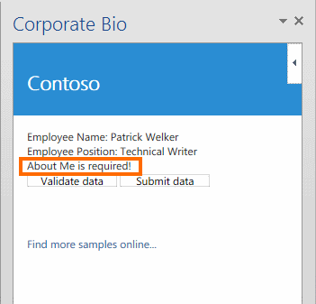
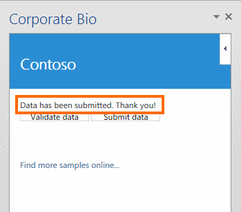

The sample shows the following:
-
How to use JavaScript to add bindings to the content controls in the document.
-
How to verify that bindings are in place before attempting to retrieve the values from them.
-
How to retrieve values from content controls and validate that the user has entered required data.
Prerequisites
This sample requires:
-
Visual Studio 2012 (RTM).
-
Office 2013 tools for Visual Studio 2012 (RTM).
-
Word 2013 (RTM).
Key components of the sample
The sample app contains:
-
The CorporateBio project, which contains:
-
The CorporateBio.xml manifest file.
-
The CorporateBio.docx document, which is prepopulated with three RichTextContentControl objects.
Note Each object has had its Title property set, which enables it to be bound to in JavaScript.
-
-
The CorporateBioWeb project, which contains multiple template files. However, the two files that have been developed as part of this sample solution include:
-
CorporateBio.html (in the Pages folder). This contains the HTML user interface that is displayed in the task pane. It consists of a <div> with an id of validationReport, and two buttons.
-
CorporateBio.js (in the Scripts folder). This script file contains code that runs when the app is loaded. This startup script attempts to add bindings to the content controls in the document. The success or failure of this operation is reported back to the CorporateBio.html page. The script file also includes the Click event handlers for the two buttons in CorporateBio.html. One of these buttons retrieves and validates the content in the content controls by accessing the bindings that were added in the startup script. The other button provides a stub procedure that simulates submitting the data from the bindings to a back-end system or process, but only if the values from the bindings have been retrieved and validated by the first button. In all cases, a suitable report is added to the CorporateBio.html page.
-
All other files are automatically provided by the Visual Studio project template for apps for Office, and they have not been modified in the development of this sample app.
Configure the sample
To configure the sample, open the CorporateBio.sln file with Visual Studio 2012. No other configuration is necessary.
Build the sample
To build the sample, choose the Ctrl+Shift+B keys.
Run and test the sample
To run and test the sample, choose the F5 key.
The following screen shots show examples of the document at various stages of the process. Figure 2 shows a document opened with content controls successfully bound to a custom XML part.

Figure 3 shows the task pane app UI after the Validate button has been chosen.

Figure 4 shows the task pane app UI after the Submit button has been chosen.

Troubleshooting
If the app starts with a blank document instead of the one shown in Figure 1, ensure that the StartAction property of the CorporateBio project is set to CorporateBio\CorporateBio.docx and not just to Word.
For Visual Studio 2013, when you first load the .sln you need to check that the CorporateBio project has the Start Document property as "CorporateBio.docx". When you run the code, select the "CorporateBio" app (on the INSERT ribbon in MyApps).
Change log
First release: March 15, 2013.